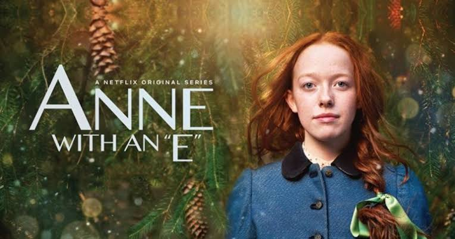

LIVROS

A importância da leitura na atualidade
A leitura é uma ferramenta indispensável para o desenvolvimento humano, pois amplia o repertório cultural, estimula o pensamento crítico
e enriquece o vocabulário. Mais do que transmitir conhecimento, o hábito de ler exercita o cérebro, melhora a capacidade de interpretação
e desperta a empatia ao nos conectar com diferentes realidades.
Ao longo da história, a menina enfrenta diversas aventuras,
dificuldades, um romance complicado com seu querido amigo Gilbert Blythe e
uma grande amizade com sua irmã de alma, Diana Barry.
Anne se destaca por sua curiosidade e determinação, além de possuir uma
forte opinião e senso de justiça, querendo sempre fazer o bem, às vezes sem
pensar nas consequências, transformando a sua dor em solidariedade e empatia
para ajudar as pessoas ao seu redor.
Por fim, a série como um todo aborda muito mais do que apenas a história de
uma órfã, expondo e discutindo sobre temas como pertencimento, mostrando como Anne,
mesmo sendo adotada criou laços com seus tutores; a suma importância da amizade,
educação e crescimento pessoal. Além disso, também trata de assuntos como o
preconceito, racismo e desigualdade, incentivando de forma leve e criativa o respeito
mútuo entre classes e luta por uma sociedade mais justa.
Anne with an 'E'
A série foi lançada mundialmente em 12 de maio de 2017 na netflix(aplicativo de
streamig),após ter sua estreia original em 19 de março de 2017.
O seriado se passa em uma cidade fictícia, chamada Avonlea, cuja história original
se passa na Ilha do Principe Eduardo, no Canadá. A primeira temporada foi ambientada
em 1896, a segunda em 1897 e a terceira em 1899.
A trama envolve os adolescentes de Avonlea, tendo maior parte coletiva em abiente
escolar. Além disso, ocorre em ambiente rural, pois todos moram em fazendas vizinhas,
cada um com seus plantíos.
Anne teve um lindo romance, iniciado na escola. No inicio, ela e Gilbert Blythe
possuem uma relação conturbada, marcada por provocações e desentendimentos,
especialmente após o garoto zombar dela por causa de seus cabelos ruivos e ela bater
nele com um lousa.
Livros em que a série foi baseada:
- anne de green gables
- anne de avonlea
- anne de windy poplars
- anne e a casa dos sonhos>
- anne de ingleside
- vale do arco-íris
- rilla de ingleside